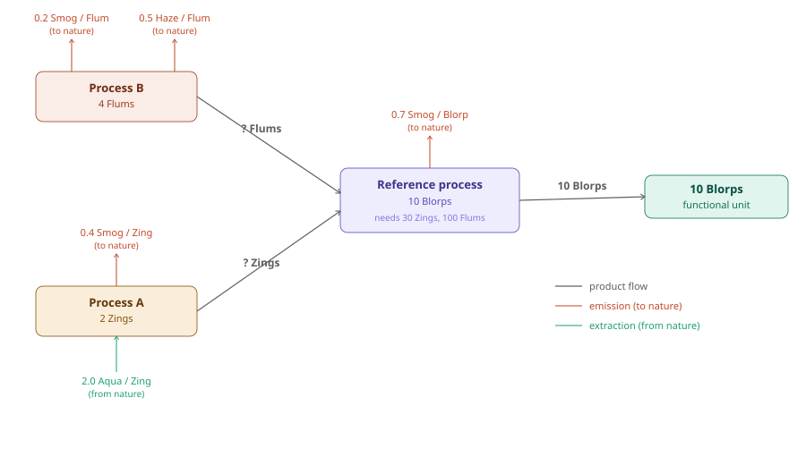

LCA Example: Producing 10 Blorps
Overview
Life Cycle Assessment (LCA) has two main computational phases:
- Life Cycle Inventory (LCI) — a bookkeeping and scaling problem. Trace all flows (materials, energy, emissions, extractions) through a process tree and normalize everything to the functional unit.
- Life Cycle Impact Assessment (LCIA) — a modeling problem. Multiply inventory flows by characterization factors to convert them into impact category scores.
The math is linear algebra: solve for how much each process must run, then accumulate elementary flows, then apply impact factors.
Functional Unit
10 Blorps of product
Everything in the inventory is scaled to this reference.
Process Tree
The system has three processes:
| Process | Reference output | Technosphere inputs |
|---|---|---|
| Reference process | 10 Blorps | 30 Zings (from A), 100 Flums (from B) |
| Process A | 2 Zings | — |
| Process B | 4 Flums | — |
Elementary flows (from database)
Emission and extraction rates are fixed properties of each process, looked up from the database (e.g. ecoinvent). They are always positive — direction is encoded by the flow type (compartment), not by sign.
| Process | Flow | Type | Rate |
|---|---|---|---|
| Reference process | Smog | Emission to air | 0.7 Smog / Blorp |
| Process A | Smog | Emission to air | 0.4 Smog / Zing |
| Process A | Aqua | Extraction from ground | 2.0 Aqua / Zing |
| Process B | Smog | Emission to air | 0.2 Smog / Flum |
| Process B | Haze | Emission to air | 0.5 Haze / Flum |
Arrow convention
- Product/energy flows go up through the tree toward the functional unit
- Emissions point out of a process (to nature)
- Extractions point into a process (from nature)
- The ? Zings and ? Flums on the product flow arrows are unknown until we solve for the scaling vector s

Step 0 — By-Hand Calculation
Before introducing matrices, we can work through the exact same calculation by tracing the supply chain step by step. This produces identical results to the matrix approach and lets you verify every number.
Step 0a — How many times does each process need to run?
We need 10 Blorps. Work backwards through the tree:
Reference process makes 10 Blorps per run. We need 10 Blorps, so:
$$ s_\text{Ref} = \frac{10 \ \cancel{\text{Blorps}}}{10 \ \cancel{\text{Blorps}}/\text{run}} = \mathbf{1.0 \ \text{run}} $$
Reference process at activity level 1.0 needs 30 Zings. Process A makes 2 Zings per run, so:
$$ s_A = \frac{30 \ \cancel{\text{Zings}}}{2 \ \cancel{\text{Zings}}/\text{run}} = \mathbf{15.0 \ \text{runs}} $$
Reference process at activity level 1.0 also needs 100 Flums. Process B makes 4 Flums per run, so:
$$ s_B = \frac{100 \ \cancel{\text{Flums}}}{4 \ \cancel{\text{Flums}}/\text{run}} = \mathbf{25.0 \ \text{runs}} $$
Check — does every demand get met?
| Flow | Produced | Consumed | Balance |
|---|---|---|---|
| Blorps | 1 run × 10 = 10 | delivered to functional unit | ✓ |
| Zings | 15 runs × 2 = 30 | Reference process needs 30 | ✓ |
| Flums | 25 runs × 4 = 100 | Reference process needs 100 | ✓ |
These run counts are exactly the scaling vector s = (1.0, 15.0, 25.0) solved in Step 2.
A note on language: Calling these values "run counts" is a useful intuition, but the more precise term is activity level — how much of each process's reference output the system needs, expressed as a multiple of that process's output per run. The word "activity level" works better than "runs" because s can be a fraction (e.g. s = 0.5 means the process operates at half capacity, not "half a run"). You will see "activity level" and "scaling factor" used interchangeably in LCA textbooks.
Step 0b — Calculate total emissions and extractions
Multiply each process's rate by how much product it handles.
Reference process — runs 1 time, produces 10 Blorps:
$$ \text{Smog} = 0.7\ \frac{\text{Smog}}{\text{Blorp}} \times 10\ \text{Blorps} = \mathbf{7.0\ Smog} $$
Process A — runs 15 times, producing 15 × 2 = 30 Zings in total:
$$ \text{Smog} = 0.4\ \frac{\text{Smog}}{\text{Zing}} \times 30\ \text{Zings} = \mathbf{12.0\ Smog} $$
$$ \text{Aqua} = 2.0\ \frac{\text{Aqua}}{\text{Zing}} \times 30\ \text{Zings} = \mathbf{60.0\ Aqua} $$
Process B — runs 25 times, producing 25 × 4 = 100 Flums in total:
$$ \text{Smog} = 0.2\ \frac{\text{Smog}}{\text{Flum}} \times 100\ \text{Flums} = \mathbf{20.0\ Smog} $$
$$ \text{Haze} = 0.5\ \frac{\text{Haze}}{\text{Flum}} \times 100\ \text{Flums} = \mathbf{50.0\ Haze} $$
Add across all processes to get the total inventory:
| Elementary flow | From Ref | From A | From B | Total |
|---|---|---|---|---|
| Smog (emission) | 7.0 | 12.0 | 20.0 | 39.0 |
| Haze (emission) | — | — | 50.0 | 50.0 |
| Aqua (extraction) | — | 60.0 | — | 60.0 |
Step 0c — Apply characterization factors to get impact scores
Murk is caused by Smog (factor 1.0) and Haze (factor 3.0):
$$ \text{Murk} = (1.0 \times 39.0) + (3.0 \times 50.0) = 39.0 + 150.0 = \mathbf{189.0} $$
Depletion is caused by Aqua (factor 0.8):
$$ \text{Depletion} = 0.8 \times 60.0 = \mathbf{48.0} $$
Step 0 Summary
| By-hand result | Matrix result (Steps 1–5) | |
|---|---|---|
| Ref runs | 1.0 | s = 1.0 |
| A runs | 15.0 | s = 15.0 |
| B runs | 25.0 | s = 25.0 |
| Inventory: Smog | 39.0 | 39.0 |
| Inventory: Haze | 50.0 | 50.0 |
| Inventory: Aqua | 60.0 | 60.0 |
| Impact: Murk | 189.0 | 189.0 |
| Impact: Depletion | 48.0 | 48.0 |
Every number matches. The matrix approach in Steps 1–5 simply packages this same arithmetic into a compact, scalable form that works even when there are thousands of processes.
Step 1 — Build the technology matrix A
The technology matrix A encodes what each process produces and consumes in the technosphere. Columns are processes, rows are products.
- Diagonal entries: reference output of each process (positive)
- Off-diagonal entries: technosphere demands — what the Reference process needs from A and B (negative)
$$ A = \begin{pmatrix} 10 & 0 & 0 \ -30 & 2 & 0 \ -100 & 0 & 4 \end{pmatrix} \quad \begin{array}{l} \leftarrow \text{Blorp} \ \leftarrow \text{Zings} \ \leftarrow \text{Flums} \end{array} $$
Columns left to right: Reference process, Process A, Process B.
Step 2 — Solve for the scaling vector s
The demand vector f expresses the functional unit — 10 Blorps, nothing else:
$$ f = \begin{pmatrix} 10 \ 0 \ 0 \end{pmatrix} $$
Solve $A \cdot s = f \Rightarrow s = A^{-1} \cdot f$. Since A is lower triangular, back-substitute row by row:
$$ \text{Row 1 (Blorp):} \quad 10 \times s_\text{Ref} = 10 \quad\Rightarrow\quad s_\text{Ref} = 1.0 $$
$$ \text{Row 2 (Zings):} \quad -30 \times 1.0 + 2 \times s_A = 0 \quad\Rightarrow\quad s_A = \frac{30}{2} = 15.0 $$
$$ \text{Row 3 (Flums):} \quad -100 \times 1.0 + 4 \times s_B = 0 \quad\Rightarrow\quad s_B = \frac{100}{4} = 25.0 $$
$$ s = \begin{pmatrix} 1.0 \ 15.0 \ 25.0 \end{pmatrix} $$
The ? Zings and ? Flums from the process tree are now resolved: The Reference process runs 1 time (producing 10 Blorps), Process A runs 15 times (delivering 15 × 2 = 30 Zings), Process B runs 25 times (delivering 25 × 4 = 100 Flums).
Step 3 — Build the intervention matrix B
The intervention matrix B contains the elementary flow produced or extracted per run of each process. Because the scaling vector s counts runs, each entry must be a per-run rate. We convert from the database rate (per Blorp, per Zing, or per Flum) by multiplying by how many of those products each process makes per run:
| Process | Flow | Database rate | Outputs per run | Per-run rate |
|---|---|---|---|---|
| Reference | Smog | 0.7 / Blorp | 10 Blorps | 7.0 |
| Process A | Smog | 0.4 / Zing | 2 Zings | 0.8 |
| Process A | Aqua | 2.0 / Zing | 2 Zings | 4.0 |
| Process B | Smog | 0.2 / Flum | 4 Flums | 0.8 |
| Process B | Haze | 0.5 / Flum | 4 Flums | 2.0 |
$$ B = \begin{pmatrix} 7.0 & 0.8 & 0.8 \ 0 & 0 & 2.0 \ 0 & 4.0 & 0 \end{pmatrix} \quad \begin{array}{l} \leftarrow \text{Smog (emission to air)} \ \leftarrow \text{Haze (emission to air)} \ \leftarrow \text{Aqua (extraction from ground)} \end{array} $$
Columns left to right: Reference process, Process A, Process B.
Step 4 — Compute the inventory vector R = B · s
Multiply each row of B by the scaling vector s:
$$ R[\text{Smog}] = (7.0 \times 1.0) + (0.8 \times 15.0) + (0.8 \times 25.0) = 7.0 + 12.0 + 20.0 = \mathbf{39.0} $$
$$ R[\text{Haze}] = (0 \times 1.0) + (0 \times 15.0) + (2.0 \times 25.0) = 0 + 0 + 50.0 = \mathbf{50.0} $$
$$ R[\text{Aqua}] = (0 \times 1.0) + (4.0 \times 15.0) + (0 \times 25.0) = 0 + 60.0 + 0 = \mathbf{60.0} $$
$$ R = \begin{pmatrix} 39.0 \ 50.0 \ 60.0 \end{pmatrix} $$
This is the life cycle inventory — total elementary flows attributable to producing 10 Blorps, aggregated across all processes.
Step 5 — Apply the characterization matrix C, get impact vector h = C · R
The characterization matrix C converts elementary flows into impact scores using scientific factors. Both emissions and extractions contribute positively — no sign distinction here either.
| Flow | Murk potential | Depletion potential |
|---|---|---|
| Smog | 1.0 Murk / Smog | — |
| Haze | 3.0 Murk / Haze | — |
| Aqua | — | 0.8 Depletion / Aqua |
$$ C = \begin{pmatrix} 1.0 & 3.0 & 0 \ 0 & 0 & 0.8 \end{pmatrix} \quad \begin{array}{l} \leftarrow \text{Murk potential} \ \leftarrow \text{Depletion potential} \end{array} $$
$$ h[\text{Murk}] = (1.0 \times 39.0) + (3.0 \times 50.0) + (0 \times 60.0) = 39.0 + 150.0 + 0 = \mathbf{189.0} $$
$$ h[\text{Depletion}] = (0 \times 39.0) + (0 \times 50.0) + (0.8 \times 60.0) = 0 + 0 + 48.0 = \mathbf{48.0} $$
$$ h = \begin{pmatrix} 189.0 \ 48.0 \end{pmatrix} $$
Full Calculation Chain
$$ h = C \cdot B \cdot A^{-1} \cdot f $$
| Symbol | Name | Dimensions |
|---|---|---|
| $f$ | Demand vector | $p \times 1$ (products) |
| $A$ | Technology matrix | $p \times n$ (products × processes) |
| $s = A^{-1}f$ | Scaling vector | $n \times 1$ (processes) |
| $B$ | Intervention matrix | $e \times n$ (elementary flows × processes) |
| $R = Bs$ | Inventory vector | $e \times 1$ (elementary flows) |
| $C$ | Characterization matrix | $k \times e$ (impact categories × elementary flows) |
| $h = CR$ | Impact vector | $k \times 1$ (impact categories) |
In real LCA software (SimaPro, OpenLCA), A is drawn from a background database like ecoinvent and can have thousands of rows and columns — but the matrix structure and the $h = C \cdot B \cdot A^{-1} \cdot f$ equation are identical.
Summary of Results
| Value | |
|---|---|
| Functional unit | 10 Blorps |
| $s_\text{Ref}$ | 1.0 run |
| $s_A$ | 15.0 runs |
| $s_B$ | 25.0 runs |
| Inventory: Smog | 39.0 |
| Inventory: Haze | 50.0 |
| Inventory: Aqua | 60.0 |
| Impact: Murk | 189.0 |
| Impact: Depletion | 48.0 |